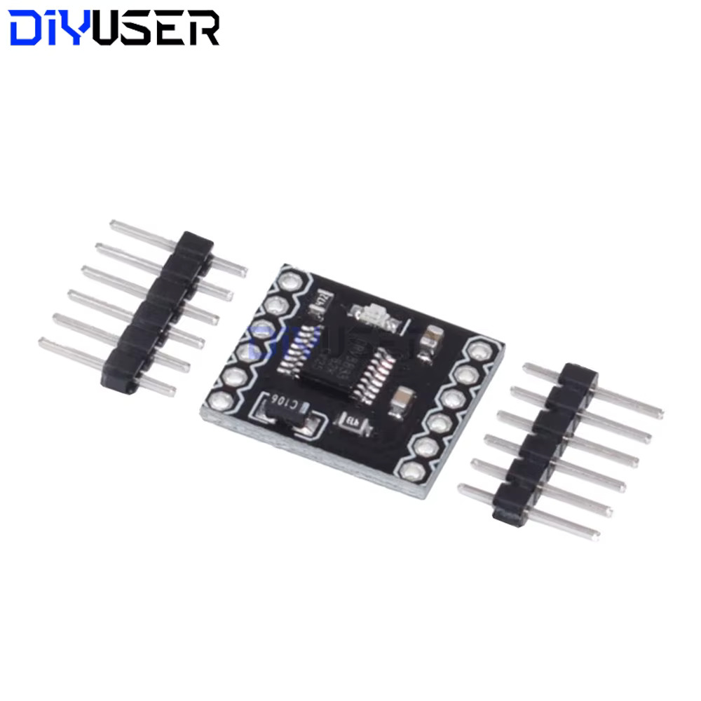
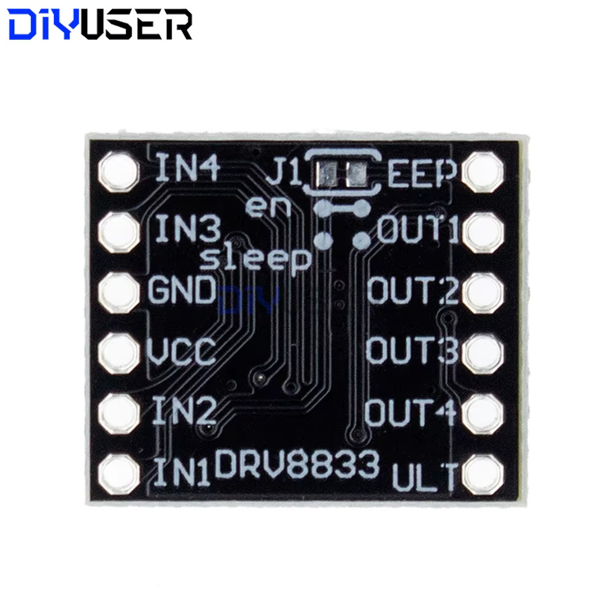
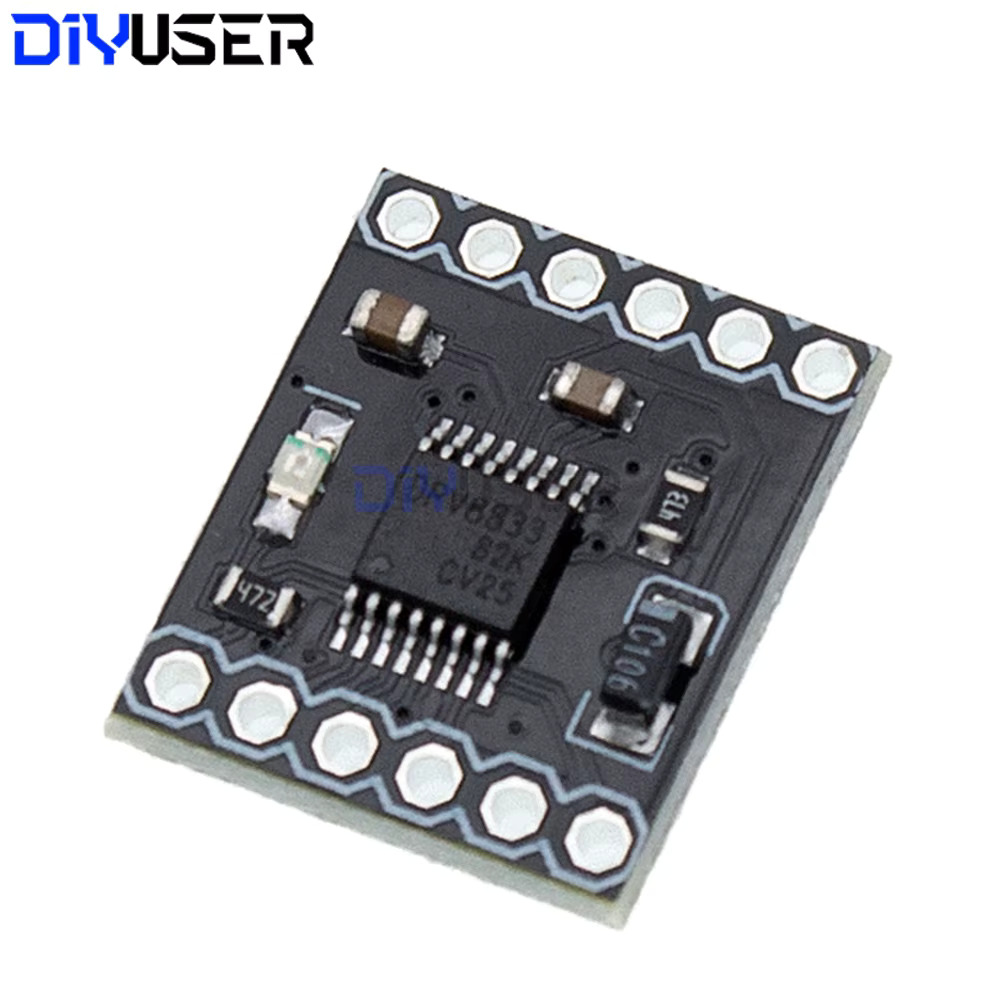

D2
DRV8833 dual H-bridge motor driver module
untested×5New-bought stock, a small breakout carrying a chip marked V8833 / 82K / CV25
(a DRV8833, partly obscured by the photo angle) — a dual H-bridge motor driver, tiny
enough to sit right next to a gearmotor rather than on a central driver board like the
MD22 (D1).
- Board 18.5 × 16 mm; ships with two loose 6-pin header strips — solder before use.
- VCC 3–10 V. Unlike the MD22 there's no separate logic supply: VCC powers both the logic and the motor outputs (the DRV8833 doesn't need a separate low-voltage rail).
- Two independent H-bridges, 1.5 A per channel:
OUT1/OUT2driven byIN1/IN2,OUT3/OUT4driven byIN3/IN4— can drive two DC motors, or one stepper in bipolar mode across both bridges. - Protections per the datasheet/listing: overcurrent, short-circuit, undervoltage lockout, and overheat, all "YES" — good, since these will likely get driven from a bench supply before anything else.
ULTpin: mode/sleep select — low level puts the chip in low-power sleep (outputs off); pull high for normal operation.EEPpin: labelled "output protection" in the listing; default is not connected. Function not independently confirmed.- A two-pad solder-jumper silkscreened
J1sits between theen/sleeplabels nearEEP/OUT1— looks like a default-state selector for enable/sleep; trace it before relying on the board's out-of-the-box behavior. - Full 12-pin layout, as silkscreened (two 6-pin rows, top to bottom):
IN4/EEP,IN3/OUT1,GND/OUT2,VCC/OUT3,IN2/OUT4,IN1/ULT. - Good fit for the M2 N20 gearmotors (6 V, ~0.2 A stall — well inside the 1.5 A/channel rating and the 3–10 V supply window). Not a fit for the M1 Canon motors — 22 V is well over this board's 10 V max; the MD22 stays the driver for those.
To verify:
- Solder the header strips
- Confirm VCC range and that it really does double as the motor supply before wiring a battery
- Confirm ULT behavior (high = run, low = sleep) with a bench supply, no motor attached
- Trace the J1 jumper's default state
- Bench-test each H-bridge independently against an M2 motor before trusting both channels at once
{kind=link}

{kind=link}

{kind=link}
